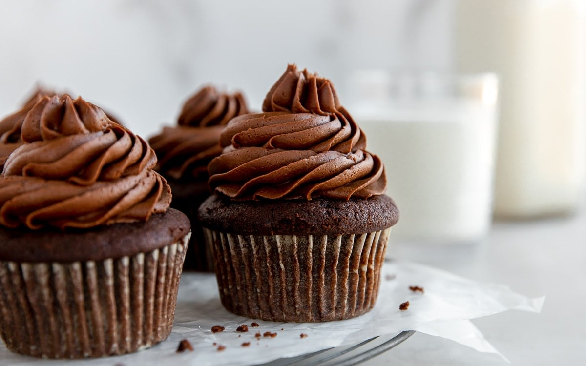

The best recipe for chocolate cupcakes for coding night

Modified: Feb 25, 2021 by Tslil
This chocolate cupcake recipe is easy to make from scratch with simple ingredients.
They are the best, moist chocolate cupcakes with a rich chocolate flavor and perfect texture.